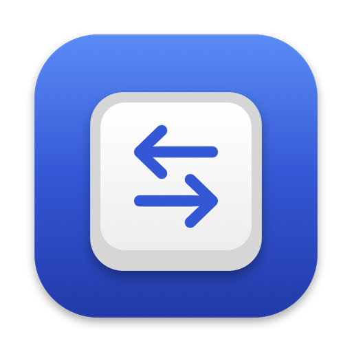

Simple key remaps
Swap WASD for the arrow keys, turn an unused key into a shortcut like ⌘C, or remap one modifier to another — any key to any key, in a couple of clicks.

Free & open source · macOS 13+A fast, native menu bar app for remapping keys on your Mac — from a simple WASD-to-arrow-keys swap to macros that type, click, loop and run your Shortcuts, active globally or only in the apps you choose.
No account. No cloud sync of your keystrokes. Runs entirely on your Mac.
Simple remaps and powerful macros live side by side in the same lightweight, native app.
Swap WASD for the arrow keys, turn an unused key into a shortcut like ⌘C, or remap one modifier to another — any key to any key, in a couple of clicks.
Chain keystrokes, typed text (emoji included) and precise delays in milliseconds or seconds, all fired from a single key press.
Left, middle or right clicks, single or double, at the pointer or at exact coordinates you pick by clicking anywhere on screen.
Repeat the last few steps or a marked block, a set number of times or forever — and keep the rest of the macro running while it loops.
Kick off any shortcut from the Shortcuts app as a macro step, and optionally wait for it to finish before moving on.
Give a macro its own stop key, or decide what pressing its trigger again does. Endless loops can always be stopped, and repeats are rate-limited so they can't flood your Mac.
Run mappings everywhere or only in the apps you choose. App-specific profiles win over global ones, and conflicting mappings are flagged so you always know which one fires.
No Dock icon, no clutter. See which profiles are active, flip remapping on or off, stop running macros, and launch at login.
Everything is stored locally on your Mac — no account, no server. Export any profile as a file to back it up or share it.
Everything happens in one settings window — no config files to hand-edit.
Name it, and choose whether it applies everywhere or only to specific apps.
Click the key field and press the physical key you want to remap.
Pick a single output key, or build a macro from keystrokes, clicks, text, delays, repeats and Shortcuts.
Enable the mapping and it takes effect immediately, system-wide.
Free and open source. Requires macOS 13 Ventura or later.
Download Mac Remapper